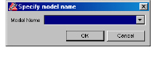
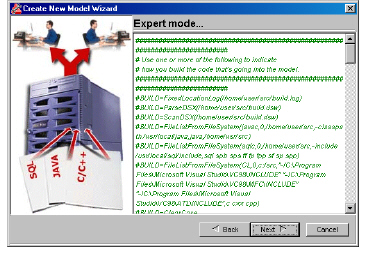
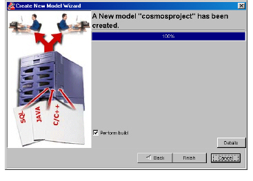
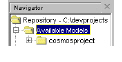

To create an information model by editing the configuration file in the create model wizard
1 Do one of the following:
• Select Model > New.
• Click .
The Specify model name dialog box appears.

2 In the Model Name field, type the name of the information model or select an information model from the list.
Important: Do not employ special characters, such as underscores or hash marks (#), in model names. Model names should only contain alphabetic characters and numbers.
3 Click OK.
The Create New Model Wizard appears.
4 Click the following option:
You are an experienced DIScover administrator who prefers to manually edit a model’s configuration file.
5 Click Next.
The Expert mode panel appears, displaying the model version’s Setup.txt file.

6 Uncomment and modify the following variables that apply to your software project:
Note: Some variables have different default values depending on your platform.
|
Variable |
Description |
|
#BUILD=FixedLocationLog(/home/user/src/build.log) |
Creates a model using all compilations logged during a custom build. |
|
#BUILD=ScanDSX(/home/user/src/build.dsw) |
Creates a model using a Microsoft Visual C++ DSW or DSP project file |
|
#BUILD=FileListFromFileSystem(sqlc,0,/home/user/src,-include /usr/local/sql/include,sql spb sps ff fp fpp sf sp spp) |
Creates a model using SQL source files in a specified directory. |
|
#BUILD=FileListFromFileSystem(javac,0,/home/user/src,-classpath /usr/local/java,java,/home/usr/src) |
Creates a model using Java source files in a specified directory. |
|
#BUILD=FileListFromFileSystem(CL,0,c:/src,"-IC:\Program Files\Microsoft Visual Studio\VC98\INCLUDE" "-IC:\Program Files\Microsoft Visual Studio\VC98\MFC\INCLUDE" "-IC:\Program Files\Microsoft Visual Studio\VC98\ATL\INCLUDE",c cxx cpp) |
Creates a model using specific types of source files in a specified directory. |
|
#BUILD=ClearCase |
Creates a model using all derived objects in the current ClearCase view. |
|
#BUILD=ClearCase(/vob1/obj,myview) |
Specifies a Rational ClearCase view to use for creating a model. |
|
#BUILD=ClearCase(PATTERN) |
Specifies which Rational ClearCase derived objects to include in the model. The pattern follows "regular expression" rules. On Windows, the most important rules are: • A letter, numeral, or forward slash (/) matches itself. • A period (.) matches any single character. • A backslash (\) followed by a special character matches the special character. • Parentheses can be used for grouping. Note: On Windows, you must specify the view's path in the pattern. |
|
#BUILD=FixedLocationTable(/home/user/src/build.table) |
Creates a model using a set of files listed in a table which supplies specific attributes for each file. The table is a text file with one line per compile file. Each line has the following tab-separated fields: • project name (e.g. ROOT) • compiler’s working directory • name of the file name that is compiled • compiler id (e.g. ntclcpp, suncc, javac) • compiler flags (as on the compiler command line) |
|
#BUILD=Custom |
Creates a model using a customized GetBuildLog.pl To customize GetBuildLog.pl, see Customizing GetBuildLog.pl. |
|
#EXTENSION=CompileFiles:c cxx cpp cc C java sql |
Specifies the file extensions included in your software project. |
|
#PARALLEL_PARSE=$HOST:4 |
Specifies the number of processes running in parallel when parsing a software project during a full model build. On a typical machine (one processor), we recommend specifying between 1 and 4. If you specify more than 4 on a typical machine, your machine may become unresponsive. |
|
#PARALLEL_UPDATE=$HOST:1 |
Specifies the number of processes to run in parallel during the update pass of the model build. |
|
#COMPILER=CC:sunccpp(/usr/SUNWspro/SC5.0) |
Overrides the built-in identification of compilers to match the command verbatim. If the build log contains various compiler commands, then multiple COMPILER lines can handle them. For a list of valid compiler IDs, see Changing Your Compiler Code. |
|
#EXTRA_FLAGS=ntclcpp:--no_wchar_t |
If there are too few flags, parsing can fail, such as a missing include -I directive. EXTRA_FLAGS=<compiler id>:flags adds the specified flags to all invocations of the specified parser. If no compiler ID is specified, the variable is applied to any parser. Additionally, flag handling for a particular compiler is determined by a flag translation configuration file in XML format. You can change any flags by modifying one of these files, located in <CodeIntegrityInstalldir>/lib/*.xml. They can be modified in place, or the modified file can be placed in your ModelTemplate/config directory or the config directory of a model version. For a list of acceptable flags, see the DIScover Installation and Administration Guide. |
|
#VAR=LogIsJustFiles:1 |
Overrides the automatic setting and reports lines from the build log that are not recognized as compile lines. LogIsJustFiles can have a value of 0 (ignore) or 1 (report unrecognized lines). The default behavior depends on the BUILD variable. If any of the build lines (i.e. FixedLocationLog) routinely bring in unrecognized lines, then DIScover suppresses reporting of unrecognized lines. |
|
#VAR=CLASSPATH:/ |
If you are compiling for Java and your build type is FileListFromFileSystem, you must add your classpath, for example: VAR=CLASSPATH:/src/xercesJavaParser/xerces.jar:$CLASSPATH Even if you added libraries to $JAVA_HOME/jre/lib/ext, you must add those libraries to the classpath variable since the DIScover parser works differently from automatic JVM processing. For this reason, $JAVA_HOME/lib/classes.zip is not recognized as a valid Java classpath. You must explicitly add all your standard runtime Java libraries to the classpath. If your classpath contains spaces, enclose it with quotes, for example, VAR=CLASSPATH:”/src/xerces Java Parser/xerces.jar”:$CLASSPATH. Note: DIScover usually locates your Java compiler and the rt.jar; however, if you receive error messages that relate to Java runtime classes during the model build process, an inadequate rt.jar may have been used. If this occurs, specify the rt.jar that you want to use with your classpath. |
|
#WINDOW=server:KeepLatest:3 |
DIScover simplifies the maintenance of model versions and the serving of models on your network with a process called windowing. Windowing allows you to maintain a set number of separate versions of the same model for historical purposes, and to serve a set number of those models to your users. Windowing uses the date stamps incorporated into each model; for this process, we recommend building your model with TODAY as the version name. Note: If you intend to keep multiple models, the number of models made available to your users should always be one less than the number of models that you keep. Once you set your variables, a version window script, VersionWindow.pl, performs routine cleanup and maintenance for you by checking the number of existing models against the values specified in the file. This variable specifies the number of model versions you want to maintain in your repository. |
|
#WINDOW=server:ServeLatest:2 |
Specifies the number of model versions you want to make available to DIScover users. |
|
#VAR=MainSrcRoot:/ |
Locates any relative file names that may occur in the build log. We recommend specifying the directory containing your make file. |
|
#VAR=BuildHost:other |
Specifies the name of the machine where the build log is generated. Setting BuildHost to other suppresses reminders to use the same machine for the model build. |
|
#TRANSLATE_PATHS=C:/Work/source;D:/cie data/src |
If your software project is built on a different machine from where your model is built, the file names in the build log will not correspond to the locations of the files on the model build host. To correct this, modify the following variable: TRANSLATE_PATHS=<log-path>;<actual-path> This path specifies a transformation from file names in the build log to actual file names. Each path is a complete directory name, and the transformation is applied to any file name with begins with <log-path>. Multiple TRANSLATE_PATHS lines are supported. |
|
#PROJECT=ROOT #SUB_PROJECT=/ROOT/foo_1 #SUB_PROJECT=/ROOT/foo_2 |
PROJECT=ROOT specifies the top-level path name of the project in the model's project hierarchy. SUB_PROJECT specifies the path name of the subproject in the model’s project hierarchy. |
|
#VAR=sharedSrcRoot:/ |
Specifies a directory for relative file names in the model. |
|
#VAR=privateSrcRoot:$HOME/CODEINTEGRITY/$MODELNAME/$USER/src |
Specifies a directory for files that the user checks out using the CM integration. |
|
#VAR=sharedModelRoot:$ADMINDIR/model |
Specifies the directory where the model is stored. Normally, this is based on DIScover's ADMINDIR location in the repository. |
|
#VAR=privateModelRoot:$HOME/CODEINTEGRITY/$MODELNAME/$USER |
Specifies the location of a private model. |
|
#VAR=AutomaticAnalysis:TS #VAR=AutomaticAnalysis:CS #VAR=AutomaticAnalysis:TS_CS #VAR=UserSpecifiedList:$HOME/incremental_build.lst #VAR=NT_UserSpecifiedList:C:\TEMP\ |
Specifies how to check for outdated files when performing an incremental model build. For information on performing an incremental model build, see Updating an Information Model Incrementally. |
|
#VAR=PublishIfIdentical:yes |
Specifies whether a model should be built if it is identical to the baseline model. To create a new model version, even if it is identical to the baseline model, type Yes. To cancel creating a new model version, if it is identical to the baseline model, type No. For information on performing an incremental model build, see Updating an Information Model Incrementally. |
7 Click Next.
A panel appears, displaying the model creation status.

8 To display details about the model creation, click Details.
9 Choose an option:
• To finish the model creation process, click Finish.
The new information model appears in the Navigator pane.

• To build the new information model, enable Perform build, click Finish, and proceed to step 2 of Starting a Full Model Build.